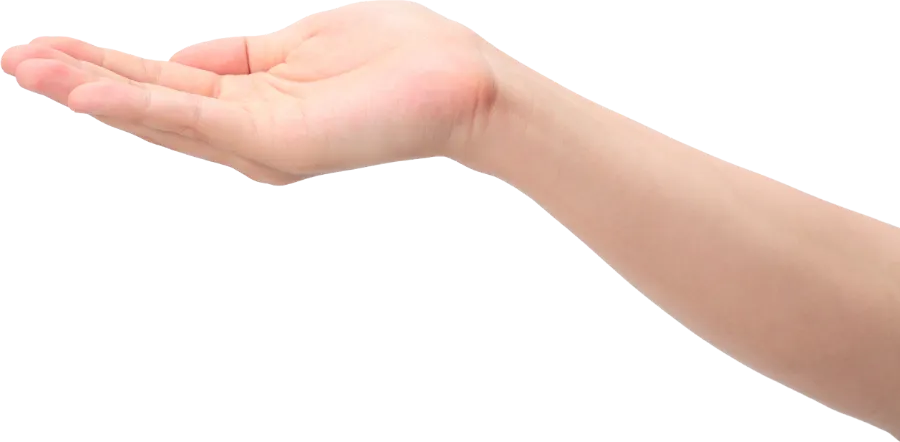

아무 웹페이지에서 누르면 노래가 나오면서, 화면 속 영문 L을 하나씩 찰칵 찍어 손바닥 위에 올려 드려요. 폰트, 크기, 색까지 그대로. 맥북 · 아이패드 · 안드로이드 다 돼요.
Safari에서 안 되면: 설정 → 고급 → “웹 개발자용 기능 보기” 켠 뒤, 개발자 메뉴 → “스마트 검색 필드에서 JavaScript 허용”을 켜세요.
L을 가져가아이패드 가로 화면에선 오른쪽, 세로 화면과 아이폰에선 아래쪽에 패널이 떠요. ⇄ 버튼으로 반대편으로 옮길 수 있어요.
takeL로, URL 칸에 붙여넣기takeL 입력 → 목록에 뜨는 ☆ 북마크 항목을 탭 (엔터 말고 항목을 눌러야 해요)Samsung Internet도 같은 방식으로 북마크 URL만 바꾸면 돼요.
chrome://extensions 열기 → 오른쪽 위 개발자 모드 켜기take-the-l 폴더 선택북마클릿이 막히는 사이트(GitHub처럼 보안이 엄격한 곳)에서도 확장은 동작해요.